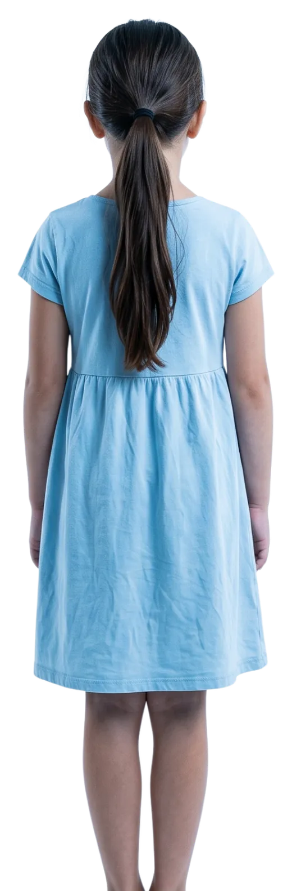

257
Crianças desaparecidas
por ano em SP.
Fonte: Ministério da Justiça — Relatório 2025

Quando uma criança desaparece,
cada minuto importa.
Proteção das crianças
Criar um aplicativo de alerta para casos de crianças perdidas e desaparecidas, com cadastro e identificação infantil, usando a tecnologia para mobilizar rapidamente as pessoas próximas e apoiar as buscas.
Um alerta. Milhares de olhos procurando.